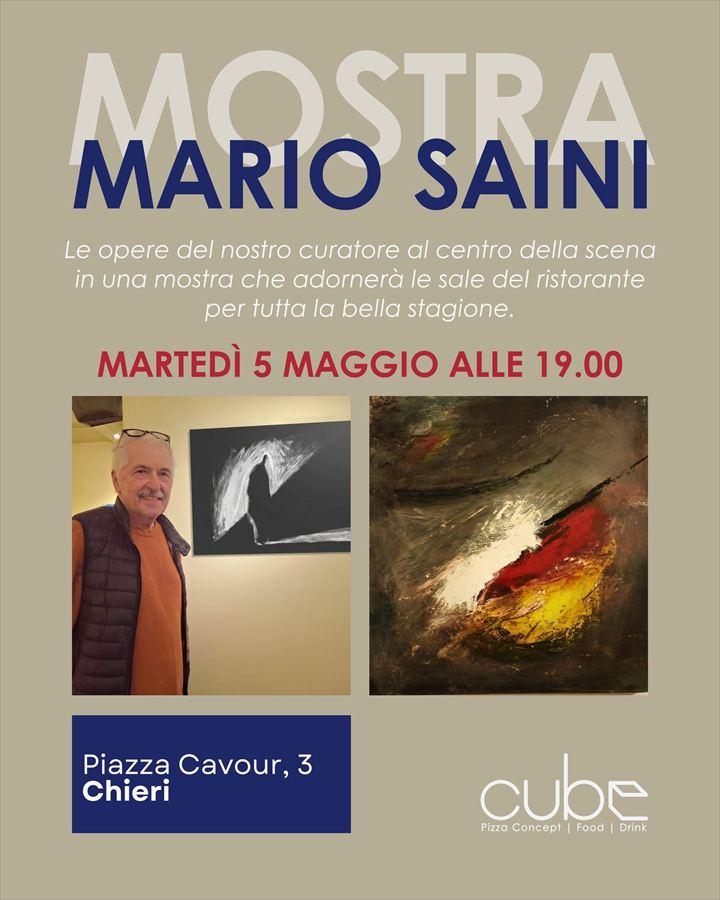
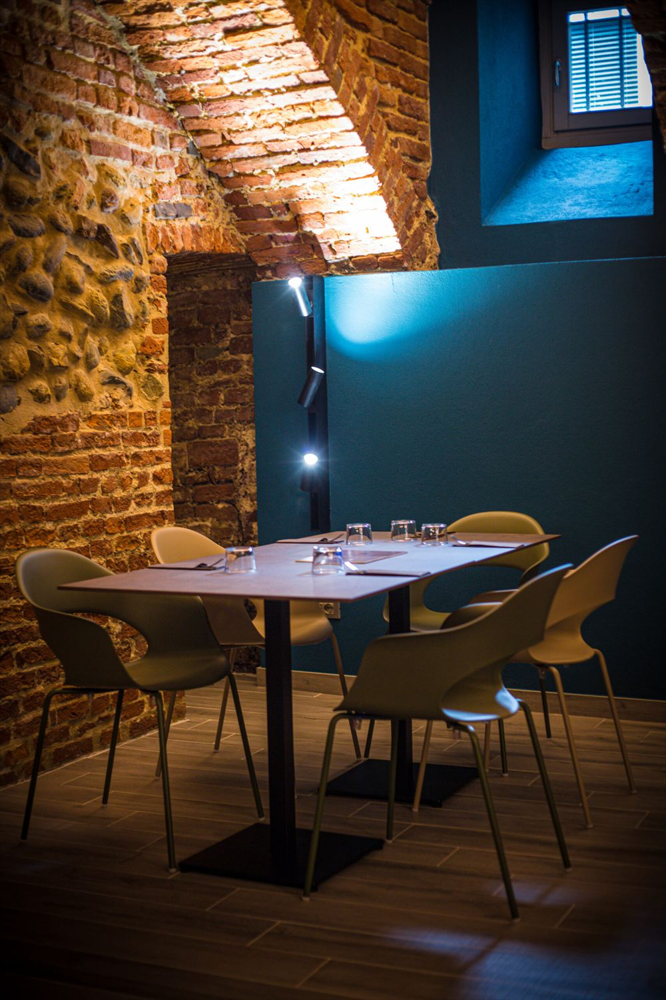
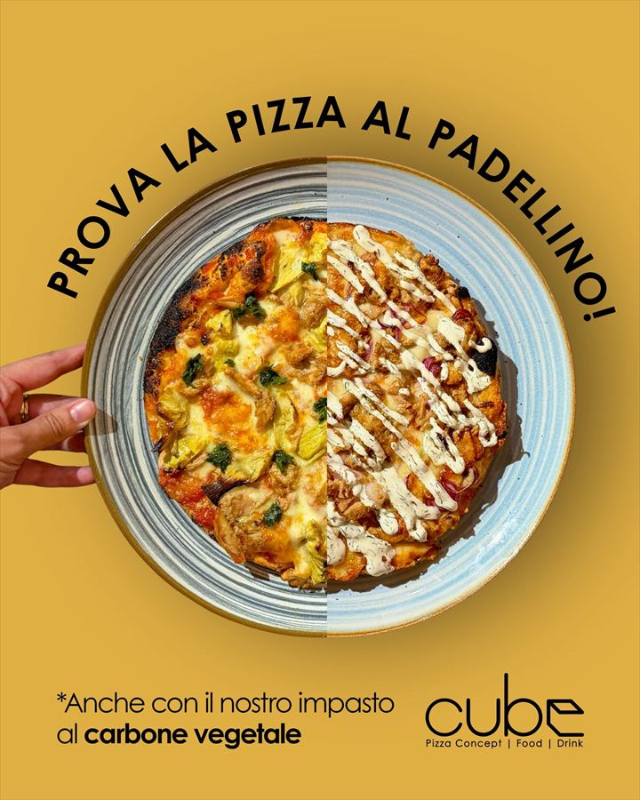

le mostre
Pittori e artisti espongono sotto le volte, con un'inaugurazione aperta a tutti.
Al piano interrato di Piazza Cavour, sotto le volte in mattoni, una pizzeria che lavora sull'impasto, sugli ingredienti e sulla presentazione. Con una cucina vera e una carta di drink da sorseggiare durante e dopo.

Mattoni a vista, pareti color petrolio, muschio verde e luci basse. Si scende qualche gradino dalla piazza storica di Chieri e si entra in un'altra atmosfera.
Una farina sola, di tipo 1 dal Molino Bongiovanni: grano piemontese coltivato senza pesticidi e macinato a pietra. Tre modi di lavorarla.
Una carta di superalcolici scelta con cura e una drink list da sorseggiare durante e dopo la cena. E una cantina di rossi piemontesi a vista, sulle mensole in ferro.
Le pareti del Cube ospitano mostre di artisti, la consolle si accende con i DJ set, e d'estate si sale in piazza per le serate della città.

Pittori e artisti espongono sotto le volte, con un'inaugurazione aperta a tutti.
DJ set e aperitivi per le serate speciali, come la Notte Bianca.

Nuove pizze e nuovi impasti: le scopri prima su Instagram.
Piazza Cavour 3 · 10023 Chieri (TO)
indicazioni · instagram · facebook